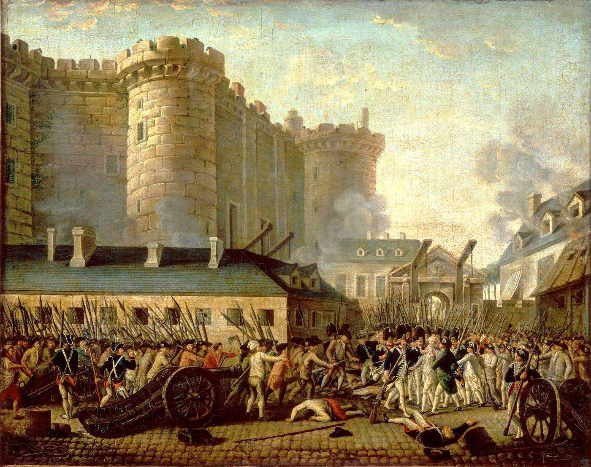

Metro Memory Trail
OSINT challenge: reconstruct a hidden location from tiny clues spread across media.
Clue 1 (PNG)
The first clue is visual. Check clue.png and inspect metadata if needed.

Clue 2 (JPEG)
The second clue is in final.jpg. Think place + year + short tag format.

Hint
Combine both clues to build the flag: CTF{city_station_YYYY}.